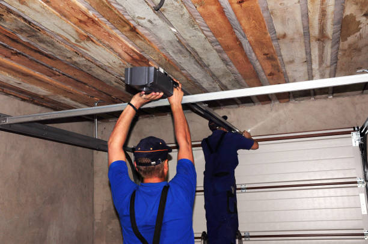
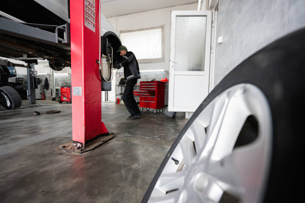

San Francisco California
info@chikegaragedoorrepair.xyz
San Francisco California
info@chikegaragedoorrepair.xyz

Need garage door repair in San Francisco California ? Our professionals deliver top-notch repairs and maintenance, improving door functionality and security. Experience quick, dependable service. Contact us for a free estimate!
Click Here To Call Us (888) 964-1837When it comes to reliable garage door repair in San Francisco California Chike Garage Door Repair is your go-to expert. Our skilled technicians are committed to providing superior service, ensuring that your garage door operates smoothly and efficiently. We understand how crucial a properly functioning garage door is for your home’s security and convenience, which is why we offer swift, professional repair services to address any issues you might encounter.
From broken springs and malfunctioning openers to misaligned tracks and damaged panels, our team is equipped to handle all types of garage door problems. We use high-quality replacement parts and the latest tools to ensure that your repairs are both effective and long-lasting. Our focus on customer satisfaction means that we work diligently to resolve your issues with minimal disruption to your daily life.
At Chike Garage Door Repair, we pride ourselves on delivering prompt and reliable services throughout San Francisco California . Whether you need emergency repairs, routine maintenance, or a complete garage door overhaul, our experienced professionals are here to assist. Contact us today for a free estimate and discover why we’re the trusted choice for garage door repair in San Francisco California .
Residential & commercial Garage Door repair
Quality services at affordable prices
Immediate 24/ 7 emergency services


If your garage door won’t open or close, it can be both frustrating and inconvenient. At Chike Garage Door Repair, serving San Francisco California we understand how vital a functioning garage door is for your daily routine. Here’s why your garage door might be experiencing these issues and what you can do about it.
1. Power Supply Issues
The first thing to check is whether your garage door opener is receiving power. Ensure the opener is plugged in and the circuit breaker hasn’t tripped. Sometimes, a simple power reset can solve the problem.
2. Remote or Wall Switch Problems
If your garage door opener is unresponsive, the issue might be with the remote or wall switch. Check if the remote batteries need replacement or if the wall switch is functioning correctly. Reprogramming the remote or fixing the wall switch might be necessary.
3. Faulty Garage Door Springs
Garage door springs are essential for the proper functioning of your door. Broken or worn-out springs can prevent the door from opening or closing. If you hear a loud bang or notice the door is uneven, your springs might be the problem and should be replaced by a professional.
4. Obstructions and Misalignment
Sometimes, objects blocking the door’s path or misalignment can cause it to malfunction. Inspect the tracks for any obstructions and ensure the door is properly aligned with the tracks. Lubricating the tracks and rollers can also help.
5. Sensor Issues
Modern garage doors are equipped with safety sensors. If these sensors are misaligned or obstructed, the door may not operate correctly. Clean and realign the sensors to ensure they function properly.
For reliable garage door repair services in San Francisco California trust Chike Garage Door Repair. Our experienced technicians are ready to diagnose and fix any issues with your garage door quickly and efficiently. Contact us today to restore the smooth operation of your garage door.
Residential & commercial Garage Door repair
Quality services at affordable prices
Immediate 24/ 7 emergency services
The convenience of an automatic garage door is undeniable, but when it malfunctions, it can be very frustrating. Our automatic garage door repair services in San Francisco California are designed to address any issue associated with automatic systems, from faulty sensors and remote malfunctions to complete failures. Our trained technicians quickly assess the problem and provide effective solutions, ensuring that your automatic door is restored to its full functionality. Choose us for our reliability, expertise, and commitment to customer satisfaction.

Garage door sensors are a crucial safety feature, designed to prevent accidents by detecting objects in the door's path. If your garage door sensors are not functioning correctly, it can pose a serious safety risk. Our garage door sensor repair services in San Francisco California specialize in diagnosing and repairing sensor-related issues, ensuring your garage door operates safely. Our experienced team can troubleshoot any problems, adjust settings, and replace faulty sensors, restoring full functionality to your garage door system. We prioritize safety and service quality and will ensure that your garage door works as intended. Rely on us to keep your garage safe and operational.

A malfunctioning garage door remote can be a major inconvenience. If your remote is unresponsive or works inconsistently, our garage door remote repair services can help. Our technician team is adept at diagnosing remote issues and providing quick fixes or replacements as needed. We pride ourselves on being responsive and thorough, ensuring you can get back to using your garage door without hassles. Choose us for our reliable service and dedication to ensuring customer convenience.
If you’re experiencing issues with your garage door, our garage door troubleshooting services in San Francisco California are the perfect solution. Our trained technicians will evaluate your door’s performance, identify problems, and recommend the best course of action to restore functionality.
What sets our troubleshooting services apart? We pride ourselves on our thorough approach, ensuring we don’t overlook any potential issues. Our extensive experience allows us to resolve both common and complex problems, providing you with a clear understanding of your garage door’s condition and what repairs are needed.

A broken garage door can disrupt your daily life and pose a security risk. Our broken garage door repair services focus on quickly diagnosing and fixing the issue, so you can regain access to your garage without worry.
Why should you choose us for broken garage door repairs? Our skilled technicians understand the urgency of a broken door. We offer prompt and reliable service, ensuring you receive quality repairs that last. Your safety and satisfaction are our top priorities, making us the ideal choice for your garage door needs.
Hinges are small components that play a significant role in the proper functioning of your garage door. Over time, they can wear out or become damaged, hindering the door's operation. Our garage door hinge repair services focus on addressing these issues promptly. Our expert technicians will inspect the hinges, determine the problem, and recommend whether repairs or replacements are necessary. We utilize high-quality parts to ensure that your garage door operates smoothly. Choose us for reliable hinge repair services, and enjoy hassle-free access to your garage once more.

Roll-up garage doors are commonly used in both residential and commercial applications due to their space-saving design. When these doors have issues, our roll-up garage door repair services offer comprehensive solutions.
Why should you choose us for roll-up garage door repairs? We understand the mechanics of roll-up doors and can quickly diagnose and fix issues affecting their operation. Our commitment to quality and customer satisfaction ensures that your roll-up garage door is repaired effectively and efficiently.

If your garage door springs are broken or worn out, it’s crucial to have them replaced as soon as possible. Attempting to use a garage door with faulty springs can lead to severe damage or injuries. Our garage door spring replacement services utilize high-quality replacement springs tailored to your door’s specifications. Our technicians will swiftly and safely replace your springs, ensuring that your garage door operates smoothly and safely. Choose us for our expertise, professional service, and dedication to your safety.
Years Experience
Expert Technicians
Satisfied Clients
Compleate Projects
When it comes to garage door repair in San Francisco California Chike Garage Door Repair stands out as the premier choice for quality and reliability. Our commitment to exceptional service and customer satisfaction sets us apart from the competition. With years of experience in the industry, we have built a reputation for excellence that you can trust.
At Chike Garage Door Repair, we understand that a malfunctioning garage door can disrupt your daily routine and compromise your home's security. That’s why we offer prompt, efficient, and affordable repair services tailored to meet your specific needs. Whether it's a broken spring, a faulty opener, or damaged panels, our skilled technicians are equipped with the expertise and tools to handle any issue with precision and care.
We pride ourselves on delivering high-quality repairs that restore your garage door’s functionality and ensure long-lasting performance. Our team is dedicated to using the latest techniques and top-grade materials to guarantee a job well done. Additionally, we offer transparent pricing with no hidden fees, so you know exactly what to expect.
Choosing Chike Garage Door Repair means opting for a company that values integrity, professionalism, and customer satisfaction. We are fully licensed and insured, providing peace of mind with every service we perform. Experience the difference of working with a trusted local expert who prioritizes your needs and exceeds your expectations. Contact us today to schedule your garage door repair in San Francisco California and enjoy the reliable service that makes Chike Garage Door Repair the best choice in town.
When you’re looking for garage door repair near me, you want quick, reliable, and professional service. At our company, we understand the urgency of garage door issues. Whether your door won't open, is off-track, or has broken springs, our trained technicians are ready to help. We provide fast response times, excellent customer service, and top-notch repairs. Our local knowledge allows us to navigate the area swiftly, ensuring that your garage door repairs are handled promptly.
Why should you choose us for garage door repair near you? We have a reputation for excellence and are committed to providing our customers with high-quality service at competitive rates. We use only the best materials and parts for every repair, ensuring your garage door operates smoothly and efficiently long after we leave.
Emergencies can happen at any time, and when your garage door is stuck or malfunctioning, it can feel like a crisis. Our emergency garage door repair services are just a phone call away, operating 24/7 to provide you with the assistance you need. Our experienced technicians specialize in quickly diagnosing problems and executing repairs, whether it's a midnight garage door disaster or a weekend malfunction.
Choosing our emergency services means you won’t be left waiting long hours in times of distress. We prioritize your safety and satisfaction, ensuring that our repairs meet the highest standards. Trust us; we are here to restore your peace of mind.
The springs in your garage door are crucial for its functionality, and our garage door spring repair services are here to ensure they are in perfect condition. Over time, springs can wear out or break due to constant use, creating significant safety hazards and operational issues. Our experienced technicians specialize in identifying spring issues, whether they are torsion springs or extension springs. We emphasize safety and efficiency in our repairs, using high-quality materials to replace any damaged springs. We also provide guidance on regular maintenance practices to extend the life of your door springs. Trust us with your garage door spring repair in San Francisco California and regain the peace of mind that comes with a properly functioning garage door system.
Is your garage door opener not functioning? Whether it's due to a malfunctioning remote or a more complex electrical issue, we have the solution. Our garage door opener repair services cover a wide range of brands and models. Our skilled technicians will troubleshoot the issue and provide a comprehensive fix, ensuring your garage door operates smoothly. We pride ourselves on using only the best quality parts and offering transparent pricing, so you’ll never have any hidden costs. Trust us to restore the functionality of your garage door opener quickly and efficiently.
The garage door opener acts as the heart of your garage door system, powering its functions. If it's malfunctioning, it can lead to significant inconveniences. Our **garage door opener repair services** are designed for both residential and commercial clients who need swift, reliable diagnostics and repairs.
Our trained technicians have in-depth knowledge and experience with all major brands and types of garage door openers. We understand the frustration of a door that won’t open or close correctly; hence, we aim to provide a prompt resolution. From troubleshooting electrical issues to repairing worn-out gears or remote malfunctions, our service covers everything you might need.
Choosing our services means you'll benefit from our commitment to quality workmanship and customer satisfaction. We pride ourselves on being fully transparent with our repair processes, providing a thorough explanation of the issue and how we plan to resolve it. Our team utilizes high-quality replacement parts to ensure lasting repairs, because your garage door opener deserves the best service available.
When it's time for a new garage door, choosing the right company is vital. Our garage door installation services in San Francisco California are second to none. We offer a wide selection of styles, materials, and designs that suit both residential and commercial buildings. Our team guides you through every step of the installation process, from choosing the perfect door to ensuring it’s installed correctly and efficiently. Our skilled technicians are committed to flawless installations that not only enhance the appearance of your property but also improve its security and energy efficiency. With our expertise, your new garage door will operate perfectly for years to come, giving you peace of mind. Choose us for your garage door installation near me services in San Francisco California and elevate your property's curb appeal!
Are you looking for **garage door installation** services in San Francisco California ? Our team specializes in delivering high-quality garage door installations tailored to meet your requirements. A new garage door not only enhances curb appeal but also adds value and security to your property.
With countless styles, materials, and designs to choose from, we guide you through the selection process to find the ideal garage door for your home or business. Our knowledgeable team will take measurements, provide recommendations based on your needs, and ensure a smooth installation process from start to finish.
Choosing us means investing in a team that values professionalism, precision, and customer satisfaction. We ensure all aspects of the installation are handled meticulously, minimizing chances for future issues. Plus, we provide post-installation support to address any questions or concerns you may have. With our attention to detail and commitment to quality, you can trust us for all your garage door installation needs .
Your garage door plays a vital role in your home’s security and curb appeal. When it malfunctions, you need a service you can trust. Our residential garage door repair service specializes in diagnosing and repairing all types of issues, from broken springs and cables to malfunctioning openers. With our team of professional technicians, you can expect prompt service, expert advice, and guaranteed satisfaction. We use high-quality parts for all repairs, ensuring that your garage door operates as good as new.
Businesses rely on efficient and functional garage doors to operate smoothly. A malfunctioning commercial garage door can disrupt operations and incur losses. Our commercial garage door repair services are designed to minimize downtime and get your door back in action quickly. With a team of skilled technicians who understand the complexities of commercial systems, we provide targeted and effective repairs. Whether it’s a rolling steel door or a sectional door, we have the expertise to handle all your commercial garage door needs.
Garage door tracks are essential for the smooth operation of your garage door. If your door is off track or experiencing issues in movement, you need professional help. Our garage door track repair services in San Francisco California are here to restore functionality and ensure safety.
Choose us for garage door track repairs because our technicians are highly trained in diagnosing and fixing track-related issues. We use quality materials and offer reliable solutions to keep your garage door functioning properly. We pride ourselves on our quick response times and excellent customer service, ensuring that you can rely on us for all your garage door repair needs.
When you need reliable, prompt service, our **local garage door repair services** are the perfect solution. We pride ourselves on being active contributors in our community, with a deep understanding of the common garage door issues faced by our neighbors. Our quick response times and familiarity with the area ensure that we can be at your location as soon as possible.
We take the time to build relationships with our clients, ensuring a personable experience that larger companies often miss. When you call us, you can expect courteous staff, expert technicians, and a dedication to resolving your concerns efficiently.
Our services include everything from complete garage door repairs to routine maintenance and inspections. By choosing local, you support someone who understands your needs and is dedicated to providing high-quality service. We strive to maintain our reputation as the go-to provider for garage door repair in San Francisco California and we look forward to serving you.
Emergencies don’t follow a schedule, which is why our **24-hour garage door repair services** are so crucial. When your garage door suddenly malfunctions late at night or early morning, our trained technicians are ready to assist. Our commitment to being available around-the-clock ensures that you won’t be left in a frustrating situation for long.
We understand how vital your garage door is to your daily routine and security, so we prioritize rapid response times and effective solutions. Our technicians arrive fully equipped to handle most emergency repairs on the spot, ensuring you can get back to your day without delay.
We stand behind our work, offering affordable rates even for emergency services. With our reliable and efficient response, we make sure that your safety and convenience come first at all hours. You can trust us to be the dependable service provider you need in times of unexpected repairs.
Regular maintenance of your garage door can extend its lifespan and prevent unexpected breakdowns. Our garage door maintenance services in San Francisco California include comprehensive inspections, lubrication, and adjustments to keep your door operating smoothly. We recommend routine maintenance to catch minor issues before they escalate into costly repairs. Our team of professionals is committed to ensuring your garage door serves you well for years to come. With our service, you can avoid the hassle of emergencies and enjoy a reliable door every day.
The motor is one of the most critical components of your garage door opener. If you're facing issues with your garage door not opening or closing properly, it could be a sign of motor problems. Our garage door motor repair services are specifically designed to address motor-related issues efficiently. Our skilled technicians can diagnose whether repair or replacement is necessary, and we use only high-quality parts to ensure lasting performance. We understand the urgency when your garage door becomes inoperable, so we give each job our full attention to get your motor running efficiently again. Trust our years of experience to restore the functionality of your garage door motor quickly and effectively.
As a local company, we understand the unique garage door needs of residents . Our local garage door repair services prioritize convenience, ensuring you receive prompt and reliable assistance whenever you need it. With a focus on community service, we are proud to support our neighbors with high-quality repairs.
Why choose our local services? We pride ourselves on our strong customer relationships and our commitment to quality. Our technicians are familiar with the common issues that arise in the area and can diagnose and fix problems quickly. We aim to be a trusted part of the San Francisco California community, providing excellent garage door repair services.
Garage door issues can happen at any time, which is why we offer 24-hour garage door repair in San Francisco California . Our dedicated team is available around the clock to address emergencies, ensuring that you never have to worry about your garage door compromising your safety or convenience. Whether it’s a late-night malfunction or an early morning crisis, our technicians are ready to respond quickly and efficiently. We provide transparent pricing and thorough inspections, giving you peace of mind even during urgent repairs. You can trust our 24-hour services for professional garage door solutions whenever you need us.
Overhead garage doors are convenient and functional, but they can also require specific repairs as issues arise. Whether it’s a broken spring, malfunctioning opener, or a need for panel replacement, we specialize in overhead garage door repair . Our technicians have extensive experience working on overhead systems and understand the nuances involved. We proudly offer quality workmanship combined with customer service excellence that will keep your overhead door operating safely and effectively for years to come.
Broken garage door springs can pose a significant risk if not handled properly. At Chike Garage Door Repair, serving San Francisco California we emphasize the importance of safe and effective spring replacement or repair. Here’s a comprehensive guide on how to manage broken springs with care.
1. Recognize the Problem
Before attempting any repairs, confirm that the issue is indeed with the springs. Symptoms of broken springs include a garage door that won’t open, uneven movement, or loud noises. If you suspect a spring issue, avoid using the door until it’s repaired.
2. Safety First
Garage door springs are under high tension and can cause injury if mishandled. Always wear safety glasses and gloves when working with garage door springs. It’s crucial to understand that repairing or replacing these springs can be dangerous and often requires specialized tools.
3. Choose the Right Spring
Garage doors typically use either torsion springs or extension springs. Identify the type of spring your door uses before purchasing a replacement. Using the wrong type or size can lead to improper functioning or additional damage.
4. Follow Proper Procedures
For torsion springs, release the tension slowly and carefully using the appropriate winding bars. For extension springs, ensure the door is fully closed before removing or installing new springs. Replace broken springs with new ones of the same size and strength.
5. Seek Professional Help
Given the complexity and risks involved, it’s often best to contact a professional for spring replacement or repair. At Chike Garage Door Repair, our skilled technicians in San Francisco California are equipped to handle spring issues safely and efficiently, ensuring your garage door functions smoothly.
For expert spring repair and replacement services in San Francisco California trust Chike Garage Door Repair. Contact us today to schedule a professional assessment and restore the safe operation of your garage door.
San Francisco (/ˌsæn frənˈsɪskoʊ/ SAN frən-SISS-koh; Spanish for 'Saint Francis'), officially the City and County of San Francisco, is the commercial, financial, and cultural center of Northern California. The city proper is the fourth most populous city in California, with 808,437 residents, and the 17th most populous city in the United States as of 2022. The city covers a land area of 46.9 square miles (121 square kilometers) at the end of the San Francisco Peninsula, making it the second most densely populated large U.S. city after New York City and the fifth-most densely populated U.S. county, behind only four of the five New York City boroughs. Among the 91 U.S. cities proper with over 250,000 residents, San Francisco was ranked first by per capita income and sixth by aggregate income as of 2021. Colloquial nicknames for San Francisco include Frisco, San Fran, The City, and SF.
Yes, we can diagnose and fix noisy garage doors by lubricating or replacing worn parts in San Francisco California .
Yes, we specialize in getting garage doors back on track and ensuring they operate smoothly .
Yes, we can install insulated garage doors or add insulation to your existing door for energy efficiency .
Yes, we can upgrade manual garage doors to automatic systems for added convenience .
We recommend scheduling maintenance at least once a year to keep your garage door in optimal condition .
Yes, we can replace broken glass panels in garage doors to restore their appearance and security in San Francisco California .
Yes, we offer same-day service for most garage door repair needs .
Yes, we offer warranties on our repairs to ensure your satisfaction and peace of mind in San Francisco California .
If your door is severely damaged, old, or frequently malfunctioning, it may be time to replace it. We can inspect it and recommend the best solution .
Yes, we offer installation of smart garage door openers for remote access and enhanced security .
Yes, we can repair or replace faulty garage door sensors to ensure your door operates safely in San Francisco California .
Cables can break due to wear and tear, rust, or improper maintenance. We can replace damaged cables quickly .
Chike Garage Door Repair works with all major garage door brands, ensuring quality repairs and installations in San Francisco California .
Try replacing the batteries, and if that doesn’t work, contact us to inspect and repair the issue in San Francisco California .
Rollers wear out over time due to friction, dirt, and lack of lubrication. We can replace them to restore smooth operation .
Yes, we offer custom garage door designs to match your home's aesthetic and meet your specific needs .
Contact Chike Garage Door Repair for fast service to diagnose and fix the issue with your garage door .
Regularly lubricate moving parts and check for signs of wear. Contact us for professional maintenance services .
We offer consultations to help you choose the best garage door for your home based on style, durability, and budget in San Francisco California .
Chike Garage Door Repair offers repair, installation, maintenance, and opener services for residential and commercial garage doors .
Yes, Chike Garage Door Repair provides installation, repair, and maintenance services for commercial garage doors .
Yes, we specialize in repairing and replacing broken garage door springs in San Francisco California .
Yes, we specialize in repairing and replacing malfunctioning garage door openers in San Francisco California .
Yes, we offer professional garage door installation for both residential and commercial properties .
Yes, we provide 24/7 emergency garage door repair services to ensure your door is back in working order quickly .
The cost depends on the type of repair, but Chike Garage Door Repair provides free estimates for all services .
Most garage door installations can be completed in one day, depending on the size and type of door .
Most garage door repairs can be completed within a few hours, depending on the issue in San Francisco California .
Yes, we can replace individual garage door panels that are damaged or dented without needing to replace the entire door .
We install a variety of garage doors, including steel, wood, aluminum, and insulated doors, tailored to your needs .
Great experience with Chike Garage Door Repair. They repaired my garage door efficiently and effectively. The technician was professional and did a great job. If you’re in San Francisco California Chike is the company you can trust for garage door repairs!
Profession
I couldn’t be happier with Chike Garage Door Repair. They fixed our garage door issues promptly and efficiently. The technician was friendly and provided clear explanations. For top-notch garage door repair in San Francisco California Chike is the way to go!
Profession
Chike Garage Door Repair provided excellent service in San Francisco California . They fixed my garage door quickly and at a great price. The technician was professional and did a thorough job. Highly recommend their services for anyone needing garage door repairs!
Profession
San Francisco CA Garage Door repair Pros
(888) 964-1837
info@chikegaragedoorrepair.xyz
09.00 AM - 09.00 PM
09.00 AM - 12.00 PM